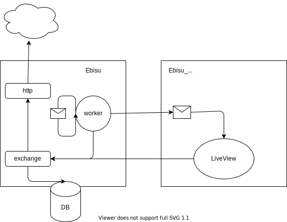
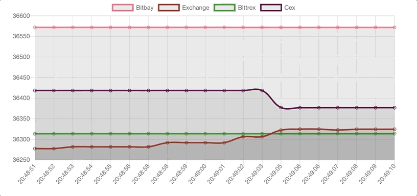

Using LiveView and GenServers to track cryptocurrency exchanges
My assumption was that price of Bitcoin varies from one cryptocurrecy exchange to another and that I could make $$$ just by buying and selling BTC on different platforms. In order to check that I could just get prices from last few days from few exchanges and use Excel to do the comparison or I could use this idea to improve my knowledge on LiveView and GenServers. As you have already guessed I picked latter option.

Our solution consist of two application: ebisu and ebisu_web. First one is responsible for periodically check BTC price in exchanges, saving fetched data in db and notifying ebisu_web about new pices. Ebisu_web is simple web application that shows BTC price from few exchanges in real time. To not add unnecessary complexity I'm going to describe solution only for bitbay.

Main components
To fetch data from exchanges we use HTTPoison which is simple yet powerfull HTTP client. Ebisu.Utils.Http is wrapper around this library. It is done that way to reuse it in multiple places and to mock it in test. Ebisu.Bitbay.Clients.Http provides us with function to get data from exchange and exchange rate provider. We use it to calculate USD to PLN price.
defmodule Ebisu.Utils.Http do
@timeout 5000
@callback get(String.t()) :: term() | no_return() | {:error, term()}
def get(url) do
case HTTPoison.get(url, [{"content-type", "application/json"}], recv_timeout: @timeout) do
{:ok, %HTTPoison.Response{body: body, status_code: 200}} ->
Jason.decode!(body)
{:ok, %HTTPoison.Response{body: body}} ->
{:error, body}
{:error, %HTTPoison.Error{reason: reason}} ->
{:error, reason}
end
end
def new do
Application.get_env(:ebisu, :http_client)
end
end
To simplify code we have another layer of abstraction for http client. For each exchange we have specific http client. In BitBay example we are going to fetch BTC price in PLN which we then convert to USD.
defmodule Ebisu.Bitbay.Clients.Http do
alias Ebisu.Utils.Http
def get_ticker do
Http.new().get("https://bitbay.net/API/Public/BTCPLN/ticker.json")
end
def get_rate do
rate = Http.new().get("http://api.nbp.pl/api/exchangerates/rates/a/usd/?format=json")
rate
|> Map.get("rates")
|> Enum.at(0)
|> Map.get("mid")
end
end
In heart of our application is exchange module which main responsibility is to get last price of BTC, converte it to USD and save it to db. Data is going to be stored in PostgreSQL using Ecto. For this to work we also have to define schema.
defmodule Ebisu.Bitbay do
alias Ebisu.Bitbay.Clients.Http
alias Ebisu.Bitbay.Ticker
alias Ebisu.Repo
import Ecto.Query
def add_ticker do
rate = Http.get_rate()
Http.get_ticker()
|> Map.put("rate", rate)
|> Ticker.changeset()
|> Repo.insert()
end
def tickers(limit \\ 20) do
Ticker
|> order_by(desc: :updated_at)
|> limit(^limit)
|> Repo.all()
end
end
defmodule Ebisu.Bitbay.Ticker do
use Ecto.Schema
import Ecto.Changeset
@fields [:max, :min, :last, :bid, :ask, :vwap, :average, :volume, :rate]
schema "bitbay_tickers" do
field(:max, :float)
field(:min, :float)
field(:last, :float)
field(:bid, :float)
field(:ask, :float)
field(:vwap, :float)
field(:average, :float)
field(:volume, :float)
field(:rate, :float)
timestamps(type: :utc_datetime)
end
def changeset(params) do
%__MODULE__{}
|> cast(params, @fields)
|> validate_required(@fields)
end
end
Last part of our ebisu application is GenServer which we use to periodically call exchange module and broadcast information to all subscibers using phoenix pub_sub. Subscriber to bitbay meassages with ticker information is LiveView which is part of ebisu_web.
defmodule Ebisu.Bitbay.Worker.Ticker do
use GenServer
alias Ebisu.Bitbay
@interval Application.fetch_env!(:ebisu, :exchange_worker_interval)
def start_link(state \\ []) do
GenServer.start_link(__MODULE__, state)
end
def init(state) do
schedule_ticker_add(state)
{:ok, state}
end
def handle_info(:add_ticker, state) do
schedule_ticker_add(state)
{:ok, ticker} = Bitbay.add_ticker()
Phoenix.PubSub.broadcast(Ebisu.PubSub, "bitbay_ticker", ticker)
{:noreply, state}
end
defp schedule_ticker_add(state) do
Process.send_after(self(), :add_ticker, Keyword.get(state, :interval, @interval))
end
end
To test that GenServer sends message to itself, fetches data from external api and saves it to db we have to mock our http module. For that we use Mox library and we specify mocked module in our setup. Next we start our worker and after 150ms we check db if we have new ticker.
defmodule Ebisu.Bitbay.Worker.TickerTest do
use Ebisu.DataCase
alias Ebisu.Bitbay.Worker.Ticker, as: TickerWorker
alias Ebisu.Bitbay.Ticker
import Mox
setup [:verify_on_exit!, :set_mox_from_context]
setup do
http_client = Application.get_env(:ebisu, :http_client)
Application.put_env(:ebisu, :http_client, Ebisu.Utils.MockHttp)
on_exit(fn ->
Application.put_env(:ebisu, :http_client, http_client)
end)
end
test "inserts message" do
expect(Ebisu.Utils.MockHttp, :get, 2, fn url ->
if url == "https://bitbay.net/API/Public/BTCPLN/ticker.json" do
%{
"max" => 4500,
"min" => 1465,
"last" => 1533,
"bid" => 1513,
"ask" => 1542,
"vwap" => 1524.42,
"average" => 1545.67,
"volume" => 4.54042857
}
else
%{
"table" => "A",
"currency" => "dolar amerykański",
"code" => "USD",
"rates" => [
%{"no" => "003/A/NBP/2021", "effectiveDate" => "2021-01-07", "mid" => 3.6656}
]
}
end
end)
start_supervised(%{
id: TickerWorker,
start: {TickerWorker, :start_link, [[interval: 100]]}
})
Process.sleep(150)
assert Repo.aggregate(Ticker, :count) > 0
end
end
Our web application consist of LiveView page which gets tickers at initial load and then passes tickers received from GenServer to web page where it is handled by javascript hook which updates graph.
defmodule EbisuWeb.TickerLive do
use EbisuWeb, :live_view
alias Ebisu.Bitbay
alias Ebisu.Bitbay.Ticker, as: BitbayTicker
@impl true
def mount(_params, _session, socket) do
if connected?(socket) do
Phoenix.PubSub.subscribe(Ebisu.PubSub, "bitbay_ticker")
end
{:ok,
assign(socket,
tickers: %{
bitbay: format(Bitbay.tickers())
}
)}
end
@impl true
def render(assigns) do
Phoenix.View.render(EbisuWeb.TickerView, "index.html", assigns)
end
@impl true
def handle_info(%BitbayTicker{} = ticker, socket) do
handle_new_ticker(ticker, socket, :bitbay)
end
defp handle_new_ticker(ticker, socket, type) do
tickers =
socket.assigns.tickers
|> Map.get(type)
|> add(ticker)
|> window()
tickers = Map.put(socket.assigns.tickers, type, tickers)
socket = assign(socket, tickers: tickers)
{:noreply, push_event(socket, "tickers", %{tickers: tickers})}
end
defp add(tickers, ticker) do
tickers ++ [format(ticker)]
end
defp format(tickers) when is_list(tickers) do
Enum.map(tickers, fn ticker -> format(ticker) end)
end
defp format(%BitbayTicker{} = ticker) do
%{x: DateTime.to_time(ticker.updated_at), y: ticker.last / ticker.rate}
end
defp format(ticker) do
%{x: DateTime.to_time(ticker.updated_at), y: ticker.last}
end
defp window(tickers) do
Enum.take(tickers, -20)
end
end
Our view consist of canvas definition where we store initial array of tickers. We also have to specify js hook using phx-hook.
<canvas id="chart" phx-update="ignore" phx-hook="Chart" data-tickers="<%= Poison.encode!(@tickers) %>"></canvas>
We define our hook in app.js file. In mounted function we specify how chart should look like. We also define handleEven which is used to update chart with new tickers.
let Hooks = {};
Hooks.Chart = {
tickers() { return JSON.parse(this.el.dataset.tickers) },
mounted() {
let ctx = this.el.getContext('2d');
let chart = new Chart(ctx, {
type: 'line',
data: {
labels: this.tickers().bitbay.map(ticker => ticker.x),
datasets: [{
label: 'Bitbay',
borderColor: 'rgb(255, 99, 132)',
data: this.tickers().bitbay.map(ticker => ticker.y)
}]
},
options: {}
});
this.handleEvent("tickers", (data) => {
chart.data.datasets[0].data = data.tickers.bitbay.map(ticker => ticker.y);
chart.data.labels = data.tickers.bitbay.map(ticker => ticker.x);
chart.update();
});
}
};
let csrfToken = document.querySelector("meta[name='csrf-token']").getAttribute("content")
let liveSocket = new LiveSocket("/live", Socket, {hooks: Hooks, params: {_csrf_token: csrfToken}})